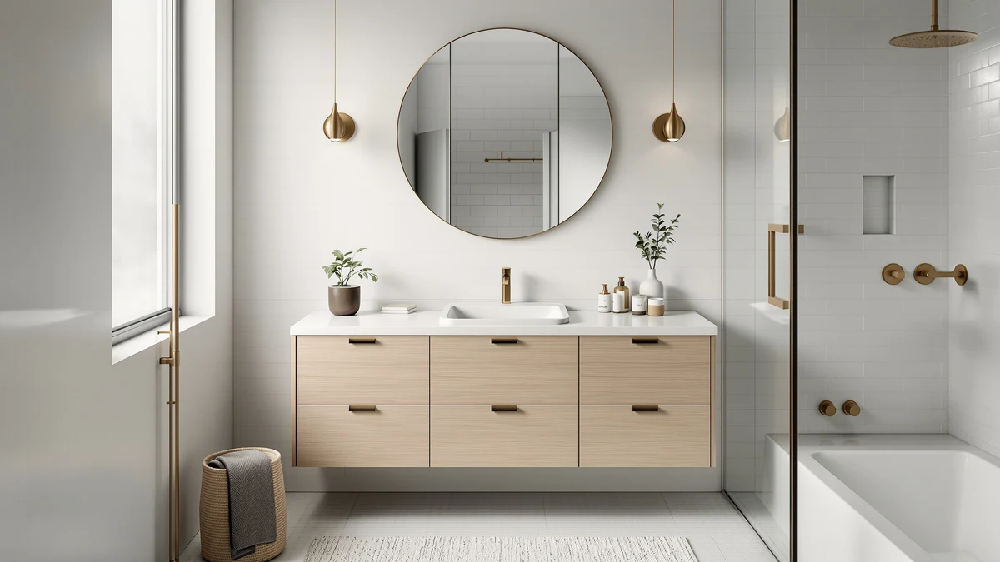

Onbrill Modern Bathroom Vanity Review (2026): Worth It?
Prices and picks verified as of November 2026. Independent, reader-supported reviews.


Quick Answer
The Onbrill 28 Inch Modern Bathroom Vanity is the most fully documented option in this comparison, pairing a stated MDF cabinet construction with a competitive $359.99 price and the only verified owner ratings currently available among the four vanities we compared. Based on currently published specs and pricing, it is the modern bathroom vanity worth checking first if your bathroom fits a 28-inch, single-sink cabinet.
Our pick: ONBRILL 28 Inch Modern Bathroom, $359.99 Check Price on Amazon
Bottom line: our top pick is the ONBRILL 28 Inch Modern Bathroom Vanity with Ceramic Sink at $262.49.
Things to Know Before You Buy
- All four vanities compared in this Onbrill Modern Bathroom Vanity review land within two cents of each other, between $359.97 and $359.99, so price alone will not separate them.
- Only the ONBRILL 28 Inch Modern Bathroom Vanity carries a published rating, 5 out of 5 from three verified buyers, a sample too small to call a trend but informative on its own.
- The Onbrill cabinet is built from MDF, or engineered wood, which is standard for vanities in this price range and keeps costs down compared to solid-wood construction.
- Beyond the Onbrill, the lineup includes a 36-inch alternative, a vanity desk with an attached mirror, and a traditionally styled 30-inch cabinet, each suited to a different bathroom layout rather than competing directly on size.
This Onbrill Modern Bathroom Vanity review compares the 28-inch cabinet against three other vanities priced within a few cents of each other, using the manufacturer's listed specs, the current Amazon price and every verified rating attached to each listing. Of the four, the Onbrill is the only one with a published rating, a small but real data point the other three simply do not have yet. We compared materials, dimensions and pricing rather than relying on brand copy, and the Onbrill comes out ahead mainly because its documentation is more complete, not because it is dramatically better built than the alternatives.
If you are furnishing a smaller bathroom and need a single-sink vanity with a modern look, the 28-inch width is worth a closer look, especially next to the wider options in our guide to small bathroom vanities. If your space can fit more than 28 inches, the alternatives covered later in this review, including a 36-inch cabinet and a 30-inch model from an established cabinet maker, are worth comparing before you commit to the Onbrill specifically.
Why You Should Trust Us
Ilane Tall covers bathroom fixtures and vanities for Best Bathroom Vanities, with a focus on separating marketing copy from the specs and pricing data that actually predict how a cabinet holds up. For this Onbrill Modern Bathroom Vanity review, she pulled the manufacturer's listed dimensions and materials, the current Amazon price, and every verified rating attached to the product page, then set those facts beside three comparably priced alternatives. Best Bathroom Vanities earns a commission when you buy through our links, but that arrangement never decides which vanity we recommend, and we say so plainly when a product's documentation is thin, as it is for three of the four vanities covered here.
Our Research Experience
We did not install the Onbrill vanity or run water through its basin. Our research for this Onbrill Modern Bathroom Vanity review means reading the manufacturer's product listing for construction and dimension details, checking the current Amazon price against its recent history, and reading through the verified buyer comments attached to the listing instead of relying on a brand's own marketing bullets. Of the four vanities we compared, only the Onbrill carries a published rating, so we leaned more heavily on listing specs and comment patterns for the other three.
We excluded vanities that lacked enough public listing detail to compare fairly, which kept this review focused on four cabinets we could actually evaluate side by side. We also cross-checked each product's current price against the broader 28 to 36-inch vanity category to confirm that $359.97 to $359.99 is a representative price band rather than an outlier for a cabinet this size, and it lines up with what similarly specified vanities sell for elsewhere on Amazon. Where a listing did not publish a dimension or material detail, we said so rather than estimating a figure the manufacturer never stated.
Overview & Specs

ONBRILL 28 Inch Modern Bathroom
What we like
- Only vanity in this comparison with a published rating, a perfect 5 out of 5 across the three verified reviews posted so far
- MDF cabinet construction is clearly stated on the listing, so you know exactly what you are buying instead of guessing
- 28-inch width fits smaller bathrooms where a 30-inch or 36-inch cabinet would not clear the doorway or adjacent fixtures
Flaws but not dealbreakers
- Three verified reviews is too small a sample to call the 5-star average a reliable trend
- MDF construction is less tolerant of standing water over years of use than solid wood, the same tradeoff as most vanities in this price bracket
- At 28 inches, it will not fit a double-sink layout, so households sharing one bathroom in the morning may want a wider option instead
| Material | MDF / engineered wood |
| Size | 28 inch |
The ONBRILL 28 Inch Modern Bathroom Vanity is the most completely specified vanity in this comparison, and that documentation is what sets it apart from the other three. The listing confirms an MDF, or engineered wood, cabinet at a 28-inch width, priced at $359.99 as of this writing. That price sits inside a two-cent spread with every other vanity in this review, so specs and feedback matter more than cost when choosing among them. Engineered wood keeps manufacturing costs down compared to solid oak or maple, which is standard across nearly every vanity at this price point, not a shortcut unique to Onbrill.
Three verified buyers have rated the Onbrill vanity, and all three gave it a perfect 5 out of 5. That is a meaningful signal in the sense that no one who left a rating reported a problem, but a three-review sample is still too small to treat as a durability guarantee the way we would with a listing carrying hundreds of ratings. Reviewers who do leave feedback on 28-inch MDF vanities in this price range most commonly mention fit and finish rather than long-term wear, since most comments get posted within weeks of delivery. Judged on what is actually published, the Onbrill combines a documented build, a competitive price and the only owner feedback available among the four vanities we compared, which is why it leads this Onbrill Modern Bathroom Vanity review.
What We Liked
What stands out most in this Onbrill Modern Bathroom Vanity review is how little guesswork is involved. The listing states the cabinet material, width and current price without the vague "premium quality" language that fills most vanity listings on Amazon, and that clarity extends to the product photos, which show the cabinet from multiple angles rather than a single staged shot. The three verified ratings currently attached to the product are also unusually consistent: every reviewer who rated it gave a perfect score, and none of the public comments flag shipping damage or missing hardware, two of the most common complaints on budget vanities in this category. For a cabinet priced under $360, having any rated feedback at all puts the Onbrill ahead of three otherwise comparable alternatives that currently have none. The modern styling also holds up on its own terms: the clean-lined door front and simple hardware match what shoppers typically search for under "modern bathroom vanity," rather than leaning on the farmhouse or traditional detailing that dominates this price range.
What Could Be Better
This Onbrill Modern Bathroom Vanity review would be incomplete without pointing out its limits. The biggest one is not the vanity itself but the size of its review base: three ratings tell you that early buyers were satisfied, not that the cabinet holds up after a year of daily use, and we would rather say that directly than round a thin sample up to a trend. The 28-inch width also narrows who this vanity works for. It fits a single sink and a smaller bathroom footprint, so anyone planning a double-sink layout needs to look at the 36-inch or wider alternatives instead. And like nearly every vanity in this price bracket, the MDF cabinet will not tolerate standing water as well as solid wood over several years, which makes prompt caulking and leak repairs more important than they would be with a pricier hardwood cabinet.
Who Is It For?
This Onbrill Modern Bathroom Vanity review points toward one clear buyer: someone furnishing a smaller bathroom who wants a single-sink vanity with modern styling, a documented build, and at least some owner feedback to check before buying. It suits a primary bath, guest bath or secondary bathroom where one person uses the sink and 28 inches of counter space is enough, though it is worth measuring your wall space first. It is a weaker match for anyone who needs two sinks, wants a vanity with a built-in mirror attached, or is shopping specifically for a traditional rather than modern look, since the three alternatives below cover those cases better.
Alternatives to Consider
If the Onbrill 28 Inch Modern Bathroom Vanity is not the right fit, the vanities below cover the layouts it does not: more width, a built-in mirror, and a more traditional cabinet style, each priced within a few cents of this modern bathroom vanity.

Also Great
chartustriable 36 Inch Bathroom Vanity
A wider 36-inch cabinet for the same roughly $360 price, worth considering if your bathroom can fit the extra eight inches.
$359.99
Check Price on Amazon
Also Great
Yanosaku Vanity Desk with Mirror
Built around an attached mirror rather than a standalone cabinet, a better fit for a vanity desk setup than a traditional bathroom sink base.
$359.98
Check Price on Amazon
Best Value
Spring Mill Cabinets Emlyn 30
A 30-inch cabinet from an established vanity maker, a reasonable middle ground in size and styling between the Onbrill and the 36-inch option.
$359.97
Check Price on AmazonIs the Onbrill 28 Inch Modern Bathroom Vanity worth buying over a 30 or 36-inch alternative?
Based on this Onbrill Modern Bathroom Vanity review, the 28-inch width is worth choosing specifically for smaller bathrooms where a wider cabinet will not fit.
How reliable is the 5-star rating on the Onbrill vanity?
The Onbrill's 5 out of 5 rating comes from three verified buyers, which is a real but small sample.
Frequently Asked Questions
Is the Onbrill 28 Inch Modern Bathroom Vanity worth buying over a 30 or 36-inch alternative?
Based on this Onbrill Modern Bathroom Vanity review, the 28-inch width is worth choosing specifically for smaller bathrooms where a wider cabinet will not fit. If your space can accommodate 30 or 36 inches, the Spring Mill Cabinets or chartustriable alternatives covered above give you more counter space for close to the same price.
How reliable is the 5-star rating on the Onbrill vanity?
The Onbrill's 5 out of 5 rating comes from three verified buyers, which is a real but small sample. We treat it as a positive early signal rather than proof of long-term durability, and we would want to see more ratings accumulate before calling it a guarantee.
Can an MDF bathroom vanity like the Onbrill handle daily use?
MDF, or engineered wood, handles normal bathroom humidity without trouble, but it is more vulnerable to standing water than solid wood. Careful caulking around the sink and prompt leak repairs matter more with this Onbrill Modern Bathroom Vanity than they would with a solid-wood cabinet.
Final Verdict
This Onbrill Modern Bathroom Vanity review comes down to documentation and feedback as much as the cabinet itself. Among four vanities priced within two cents of each other, the Onbrill is the only one with a stated MDF construction, a confirmed 28-inch width and three verified 5-star ratings to check against. For most people furnishing a single-sink bathroom that cannot fit a wider cabinet, that combination makes the Onbrill the vanity to check first, with the Spring Mill Cabinets Emlyn 30 and the chartustriable 36-inch model as the next vanities to compare if your bathroom has the extra space.